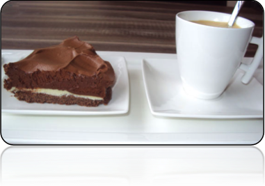
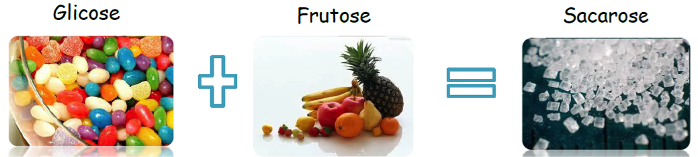

Caro (a) aluno (a),
Seja bem vindos a aula 04 do Curso, “A QUIMICA NOSSA DE CADA DIA” esperamos que aproveite bastante nossa aula, pois iremos tratar de um assunto interessante, o açúcar que utilizamos em nossa cozinha.
Bons estudos!
De tão importante, ele já chegou a ser conhecido como “ouro branco”. Hoje, por outro lado, o açúcar é apontado como um dos culpados por doenças como obesidade, diabetes, hipertensão e colesterol elevado, tornando-se o vilão dos tempos modernos.

MAS PORQUE GOSTAMOS TANTO DE ALIMENTOS DOCES?
O sabor doce nos causa sensação de recompensa e bem-estar, pois ao ingerirmos uma guloseima, o cérebro libera opioides (substancias químicas naturais que proporcionam sensação de prazer). Estas substâncias produzem o mesmo efeito químico das drogas, condicionando o organismo a ingerir mais e mais açúcar. A grande verdade é que apesar de possuírem muitas calorias (denominadas vazias, por não possuírem nutrientes) os doces nos proporcionam satisfação e prazer, sendo fonte de energia para o organismo humano.
Ao término dessa aula você deve ter fixados os seguintes conhecimentos:
Inserir EFEITO ESCREVER, seguido de texto.
- Tipos de açúcar comumente comercializados;
- Etapas de processamento que transforma o caldo de cana em açúcar refinado;
- Os principais processos químicos ao qual o açúcar é submetido;
- Como as plantas são fontes de carboidratos;
- Porque os açúcares são fontes de energia ao mesmo tempo que nos fornecem calorias vazias.
Finalizar EFEITO ESCREVER.

Para atingir esses objetivos, é necessário, que você, aluno, se integre com as mídias propostas no material, sobretudo, que participe e estude o conteúdo com motivação, procurando esclarecer suas dúvidas, sempre que necessário.
Acreditamos na sua capacidade e desempenho, Bom estudo!
A QUÍMICA DO AÇÚCAR
Conhecido da humanidade há muito tempo, o açúcar, cuja descoberta é atribuída aos indianos, possui espaço importante na vida diária das sociedades. Fazem uso dele donas de casa, trabalhadores, apreciadores de cafezinho e a indústria de alimentos, a qual consome toneladas de açúcar para a produção de uma infinidade de produtos, que vão desde biscoitos a bebidas.
Inserir EFEITO SALA LOUSA, seguido de texto.
O Brasil é um dos maiores produtores e exportadores de açúcar do mundo, com 31 milhões de toneladas produzidas na safra 2008/2009. A região centro-sul produz 86%, em 6 unidades produtoras de açúcar e 186 unidades que produzem açúcar e etanol, de acordo com dados de 2010 da UNICA, União da Indústria de Cana de Açúcar. No Nordeste, onde a história e a importância do açúcar se confundem com a história da própria região, a produção anual aproxima-se dos 5 milhões de toneladas de açúcar.
Finalizar EFEITO SALA LOUSA
A Comissão Nacional de Normas e Padrões para Alimentos em sua Resolução CNNPA nº 12 de 1978 define açúcar como, sacarose obtida da cana de açúcar (Saccharum officinarum) ou de beterraba (Beta alba, L.), por processos industriais adequados. O produto é designado "açúcar", seguido da denominação correspondente às suas características. Ex: "açúcar cristal", "açúcar mascavo" etc.
Quimicamente os açúcares encontram-se no grupo dos carboidratos, tem fórmula molecular (CH2O)n.
São encontrados na forma de monossacarídeos, dissacarídeos ou polissacarídeos. O carboidrato encontrado em maior proporção no nosso açúcar é a sacarose, um dissacarídeo formado por glicose e frutose.
O açúcar é obtido da cana-de-açúcar ou da beterraba açucareira (as únicas plantas que produzem sacarose suficiente para a produção industrial), sendo formado por sacarose, que é sólido e cristalino, constituído por uma mistura de glicose + frutose.

Figura 1: http://upload.wikimedia.org/wikipedia/commons/8/8c/Saccharose.png
Figura 2: http://4.bp.blogspot.com/-0sMOtbNmlyU/UYAhpGLje6I/AAAAAAAAAR4/rlck5EajOaM/s1600/sacarose2.png

A glicose é a única forma energética que o cérebro reconhece, a frutose é o açúcar que está presente nas frutas (além de sacarose e glicose, em menor quantidade) e a sacarose é o açúcar da cana de açúcar.
VEJA:
Na natureza, os açúcares são sintetizados por meio da fotossíntese (realizado por organismos fotossintetizantes, como plantas, algas e algumas bactérias), processo que utiliza a água do solo, gás carbônico (CO2) da atmosfera e energia solar produzindo carboidratos (mais comum é a sacarose) e oxigênio (O2).
Na natureza, após serem sintetizados os açúcares são utilizados em vias aeróbicas ou anaeróbicas pelos organismos vivos (animais e seres humanos) para a obtenção de energia e manutenção da vida. Os animais se alimentando de organismos fotossintetizantes (vegetais), degradando os carboidratos presentes nas plantas em gás carbônico e água, fazendo a reação inversa da fotossíntese.
Inserir EFEITO PASSA A PÁGINA, seguido de texto.
Os carboidratos são a principal fonte de energia do organismo. Como eles se encontram presentes em diferentes alimentos, o seu consumo em excesso pode causar doenças como obesidade e diabetes. A Organização Mundial de Saúde (OMS) recomenda que a ingestão de açúcar refinado não ultrapasse 10% (aproximadamente quatro colheres de sopa rasa de açúcar) do consumo diário total de calorias (dieta de 2.000 calorias).
Finalizar EFEITO PASSA A PÁGINA
Responsáveis: Prof. Katiane Arrais Jales, Prof. Maria Cristina Martins Ribeiro de Souza
Centro de Educação a Distância do Ceará - CED
{kind=link}
{kind=link}